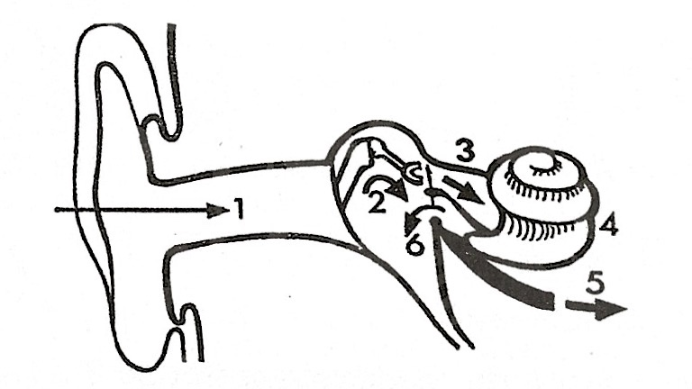
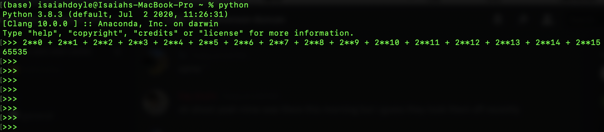
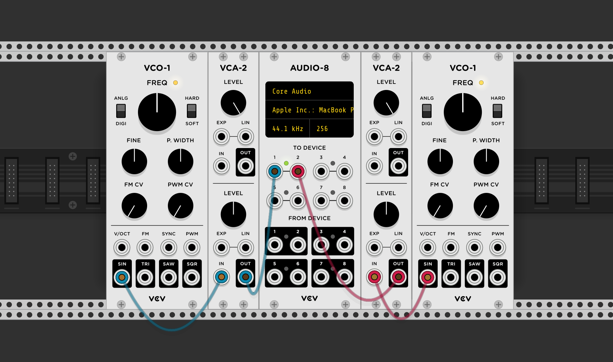

Chapter 7: Ears to Hear With
How are we able to distinguish direction (on all axes) of the source of a sound?
- Though just about impossible to distinguish regularly, the human brain is able to indentify the difference in time it takes sound to reach both ears and infer the source's direction based off of which ear the sound reached first. Time travels very fast, but the human brain works faster, which is something I find fascinating.
- Height, on the other hand, is more ambiguous than it is mystical. We know that our pinnae allow us to identify the physical height of the source of sound, though the book doesn't go into much detail, leaving it at "Somehow, this enables us to jufge the height of a sound source." (p.p. 103)
How low can humans really hear?
- At the end of Chapter 7, Pierce briefly explains the importance of harmonics when perceiving sound of a lower pitch. This got me thinking; in relation to what we read in the last few chapters, are humans actually able to hear a tone as low as ~20 Hz, or are only able to infer such a low pitch based on the relative harmonics of said tone?
This past summer I picked up a book from a used bookstore titled The Technique Of The Sound Studio: For Radio Television And Film by Alec Nisbett. In it, Nisbett explained the inner works of the human ear and its ability to perceive musical sound. I especially found a diagram in the book to display the anatomy of the ear in a way that was, to me, ever so slightly easier to understand than in Pierce's book. Though I won't bore you with Nesbitt's whole explanation of how the ear works, hear (see what I did there?) is a brief excerpt:
THE EAR. 1. Sound enters via the outer ear and the auditory canal (with a) resonance peak in the region 3-6 kHz. 2. The sound is now transported mechanically from the eardrum across the middle ear via three small bones, the ossicles. These are an impedence matching device: they convert the acoustic energy of the air to a form which is suitable for transmission through the fluid of the tiny delicate channels of the inner ear. The middle ear contains air: this permits the free vibration of the ear drum, and avoids excessive damping of the motion of the ossicles. (...) 3. The sound is pumped into the inner ear via a membrane called the oval window. 4. The inner ear is formed as a shell-like structure. There are two channels along the length of it, getting narrower until they join at the far end. Distributed along the upper channel are fine hairs which respond to particular frequencies: when the hair is bent, a nerve impulse is fired. The further the hair is along the canal the lower the frequency recorded. 5. A bundle of 4000 nerve fibres carries the information to the brain, where it is decoded. 6. Presures in the cochlea are equalized at another membrane to the inner ear: the round window.
Sources: The Technique of the Sound Studio, Alec Nisbett; The Science of Musical Sound, John R. Pierce
Chapters 5-6: Consonance, Dissonance, and Harmony
What do we call the range in which frequencies sound dissonant together, and how does it apply to consnant and dissonant chords and intervals we use today?
- Every frequency has a range in which other frequencies sound dissonant. The critical bandwidth, as we call it, is dependent on the magnitude of a given frequency, but lies in between a minor third and a whole tone for the majority of frequencies above A5 on a piano. We're able with linear frequencies or pure tones to easily visualize the effects of the critical bandwidth on the relation between two tones, and thus apply those rules to real sounds, rather than one pure frequency.
-
For example, a C major triad is seen as consonant, due to the fact that
the harmonics of each note in the triad line up exactly or lay far enough
from each tone's critical bandwidth.
The first 6 harmonics of the notes of C major:
C-C-G-C-E-G /// 1 - 2 - 3 - 4 - 5 - 6
E-E-B-E-G#-B /// 5/4 - 5/2 - 10/8 - 5 - 25/4 - 75/8
G-G-D-G-B-D /// 3/2 - 3 - 9/2 - 6 - 15/2 - 9
As you can see, the M3 lines up on the 5th and 7th harmonics, and the P5 lines up on the 3rd, 6th and 9th harmonics.
How does the critical bandwidth affect our understanding of melodic intervals?
- As harmonics fall out of line, it's easy to understand why we perceive these sounds as dissonant, though how does this affect two notes played in succession? Does the brain 'remember' the last played frequency and connect the dots, or are we even able to detect melodic dissonance at all?
In chapter six, Pierce goes over the omission of the fundamental frequency and its effects (or lack thereof) on pitch. I had never looked into this before and the field seems like an extraordinary rabbit hole to get into. I'd love to experiment in the future with this phenomenon once I understand the basics of MAX, in which I'll be able to juxtapose a frequency with and without its overlying harmonics (with the lone fundamental completely out of phase) and observe whether or not the difference truly is noticeable.
Appendices A-F
What was Music V and what was its purpose? (Appendix F)
- Music V was a program written by Max Mathews in the late 60s as part of his own MUSIC-N family of software. Music V allowed for the digital synthesis of computer music -- mostly sound -- and brought new potential into the hands of creators and thinkers alike. The program itsel simulated a set of audio hardware: oscillators, adders, multipliers, and all the fancy bells and whistles that previously took plenty of time, money, and space to operate. Using the neatness of digital software, Mathews revolutionized music production into a completely new era.
- Here is a song produced by Mathews shortly after the release of MUSIC III. Its uneasy nature is indeed just in time for Hallowe'en, and it still stands in the foundations of digital sound, music, and speech synthesis of today.
Why are the waves in figure E-4 moving in contrary motions to waves traveling along a string?
- In Fig. E-4 of (p.p. 237) a wave is illustrated traveling along both an open pipe and a pipe with a closed end. This seems to be in disagreement with what we understand about waves on strings; that is, the wave travels back along the string reflected when the wave reaches a fixed point. In air, however, this diagram seems to depict waves reflecting once in contact with an open surface. In other words, why do waves behave so different from waves on a string?
In Appendix F (p.p. 240-241), interpretation of binary digits is briefly mentioned and caught my attention. Though this discussion dives further into computer language rather than the direct generation of sound, I believe proper definitions are equally as important in terms of understanding the subject matter to the best of our ability. In paragraph one of page 241, Pierce claims that 65 536 different sample amplitudes are possible due to our maximum of 16 binary digits in computer sounds. In reality, the binary result of '1111111111111111' is actually 65 535. Small mishap, but I believe it deserves a just correction.
Okay edit: a quick review of this blurb made me realize that I am indeed a fool who has seemingly forgotten of the existence of zero. So, including 0 there is in fact 65 536 different possibilities for sample amplitude but I did a bit of work for this discussion so I'm still going to keep this here... :^(
Sources: cSounds.com , The Science of Musical Sound, John R. Pierce
Chapter Four: Scales and Beats
How much is a cent in terms of frequency relation to intervals?
- A cent is exactly 1/1200th of an octave, which, in our modern twelve tone equal-tempered system, is 1/100th of a semitone. The ratio of one semitone is approximately 2 to the 1/1200th power. For example, if we use middle C (261.6256 Hz) as our base note (where C is 1.0), a semitone above middle C would be equivalent to 2 to the 1/12th power (taking the 1/1200th power of two to get one cent, then taking the 100th power of the cent to reach out semitone). In summary, where C is 1.0, C# is 1.059643. When we multiply the frequency of C by this ratio, we get the frequency of the neighbouring C#, 277.1826677 Hz.
Describe the reason and differences behind the Pythagorean and Just tuning temperaments.
- The chapter briefly recognizes two different tuning temperaments and the quantitative differences between them. What is the point of Pythagorean and Just temperaments and how may they prove useful under today's popular musical structure?
The unsheathed relationship between frequency ratios and their position in music we digest daily is fascinating. The pulse that formulates from the inconsistent sum of two waves slightly out of phase is a phenomenon I've always been aware of but never paid close attention to. This idea drove me to experiment in a free digital Eurorack simulator VCV Rack.
I made an extremely quick rack consisting of two oscillators, the left oscillating at 261.63 Hz (middle C) and the right at just 260.63 Hz. I connected the left and right oscillators through their own respective amplifiers and to the left and right speakers respectively. I was unsure as to what kind of effect one Hertz would have on the system, but I was pleasantly surprised to hear the pulsing was more than noticeable. I could immediately hear the slight difference in phase causing the waves in air to periodically cancel and thus reduce in amplitude greatly. I had never fully researched this phemonenon extensively, so I came out with a new understanding of the importance of phase, and more importantly, how pianos are tuned.
Fun Fact:
Johann Sebastian Bach was one of the first people to show extended support
to the twelve tone equal-tempered tuning system for its flexbility to be
used similarly in all twelve keys, despite slight errors in the
frequencies themselves.
Chapter Three: Sine Waves and Resonance
Describe the relationship between a sound's band width and duration.
- The duration of a sound is inversely proportional to the range of frequencies (or band) of said sound. When we compare a bass drum to the closing of a hi-hat, the bass drum sustains for a longer duration than the hi hat and has a shorter range (band) of stronger frequencies. The hi-hat, on the other hand, would be much shorter in duration comapred to the bass drum, but the range of frequencies (the band) would be wider.
What is the difference between sound and noise?
- Throughout the book and this chapter particularly, Pierce refers to the comparison of noise and sound quite often. There seems to be some distinction between thr two, but I don't believe it is ever described.
This was a peculiar chapter. Sine waves and their respective partials aren't entirely new to me. but the direct proportionality of so many topics is mindd-blowing. Helmholtz' resonators are truly interesting contraptions and it feels great being able to completely dive into such a topic. The concept of ranges of frequencies had always been such a convoluted subject for me, but in this chapter I was able to take a step back and relearn the concept from the beginning. Great stuff.
"Quotes are for dumb people who can't think of something intelligent to say on their own."
Chapter Two: Periodicity, Pitch, and Waves
How do echoes of non-periodic sounds produce an audible pitch under specific cicrumstances?
- A non-periodic sound, such as a clap or a cymbal crash, has no discernible pitch by itself. When producing these sounds in a solid corridor however, as sound travels through the air and reflects off the walls into your ears at an extreme pace, a noticeable pitch becomes apparent. This is due to the frequency of disturbances in air making a simulation of what we know as sound.
What is the mel scale?
- In A Note on Musical Pitch (p.p. 36-37), Pierce mentions briefly an experiment that was conducted on a group of subjects with no preceding musical training. What psychologists found was a relationship between the frequencies presented to the listeners and their response in what we know as mels. So what is a mel? How is it related to frequency?

I found deriving the mathematical formulas for frequency in a multitude of situations to be extremely beneficial to my understanding of the subject. The ability to clearly declare how changes in mass, length, and more relate proportionally to changes in frequency was especially useful. I prefer being able to define in literal terms a difficult-to-understand concept before conceptualizing it figuratively in my head. It was a wonderful help in taking my knowledge to the next level.
"The only mistake we can make in 'confusing' pitch, a sensation, with periodicity, the numerical frquency of the fundamental, is that of offending psychologists."
Chapter One: Sound, Music, and Computers
Who invented the first instance of what has been dubbed "the first commercial analog synthesizer," and why was it so influential?
- Robert Moog invented what was coined as the Moog Synthesizer which was a modular synth rack that, for the first time, was able to be controlled using an electric piano keyboard rather than a set of punchcards, which were used by previous synths.
- Two more reasons the Moog was so beloved was the fact that it was much more compact than other synths, which often spanned the size of entire rooms. The cost, on the other hand, only came at a measly price of $10 000. Okay, it may have still been up there, but it was a much preferable alternative to previous synthesizers coming out with a price of at least six figures.
- With a much easier access to modular synth technology new bright minds were given the opportunity to experiment and create with easy access to a distinct aritificial timbre that had never been heard by such a wide audience, thus changing the realm of musical possibilty forever.
What does the figure taken from Krzysztof Penderecki's Polymorphia depict? Is there any rational explanation to the series of lines and scribbles strewn about the page? Was Pendercki a genius with a new mean of musical notation, or have I been fooled?

The work of Robert Moog and his analog synths truly is fascinating. Of course, many of the sounds that makes the Moog so iconic is quite easily replicated through the means of a more digital interface. However to this day, the Moog remains as a testament to the beauty of analog synthesizers. Everything from the aesthetic of the machine to the so-natural-yet-so-mechanical sound is mesmerizing. A man named Mort Garson was a Canadian musician who had discovered the Moog in 1967, three years after its initial unveiling. After Garson's initial encounter, he began writing for and on the Moog and never looked back. His most well-renowned album titled Mother Earth's Plantasia was, at the time, undiscovered and lost to history until just recently as a Sacred Bones Records began reissuing the album in 2019. Garson was a musical genius, though like many others, time swept him under the rug. Fortunately, however, his music has eventually been given the recognition it deserves, enlightening the lives of humans and plants alike.
“[My dad] would be fascinated by the fact that people are finally understanding and appreciating this part of his musical career that he got no admiration for back then.”
Sources: Sacred Bones Records , The Science of Musical Sound, John R. Pierce